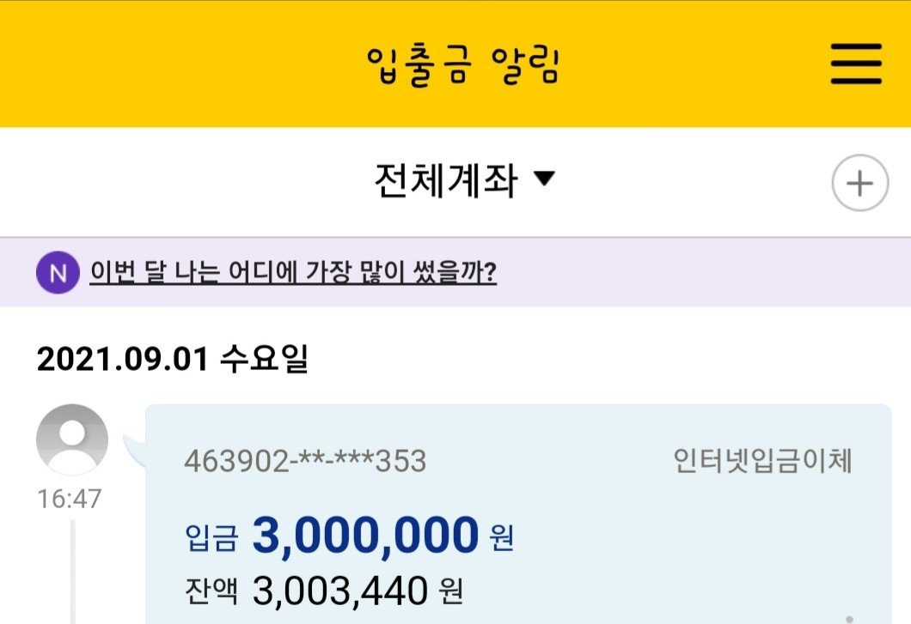

[개인회생자대출] 그동안 고생많으셨습니다 조영우이사님
30대중반 여성
직업:프리렌서(재직1개월)
개인회생8회차납입
미납없고요
뱅크엔론을 알고있던건 벌써 6년
코로나가 무엇인지 참 일하기도 힘들고
다사다난한 몇개월을 보내고 했어요
갑자기 신랑이 아파 응급으로 수술을 하게
되고 병원비에 막혀서 힘들었는데
조우영이사님과 몇개월째 상담 하고
통화하고 자문구하고 참 힘들었는데 오늘
기분좋게 대출금 받았습니다^^너무 감사합니다
오늘하루 피말랐는데 결과가 좋아서 두다리 뻤고 잠니다
#개인회생중대출 #직장인대출 #주부대출
#뱅크엔론 #감사합니다
